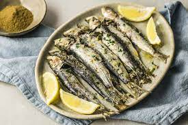

Pan Fried Sardines

Description
This is my favorite sardine recipe and it has and all the best stuff.
Ingredients
The ingredients are pretty standard. Please see below.
- Sardines in Olive Oil
- Butter
- Salt
- Pepper
- Onions
Instructions to make
- Heat pan with butter and onions on medium heat
- When hot, put sardines into pan
- Add Salt and Pepper to your liking
- Sardines are already cooked, leave on stove just to heat up